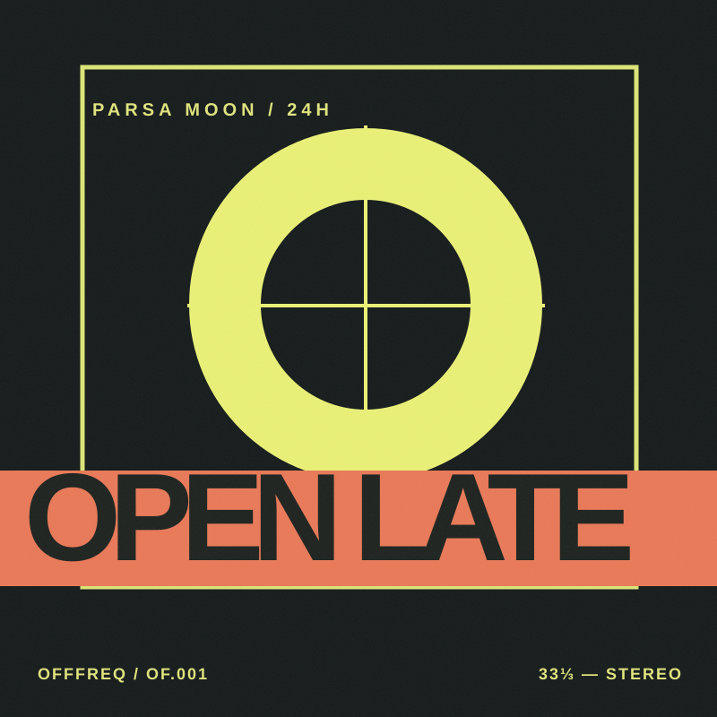
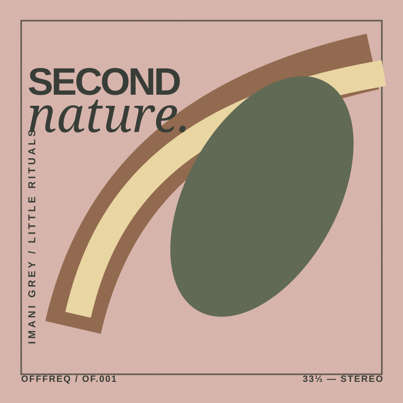
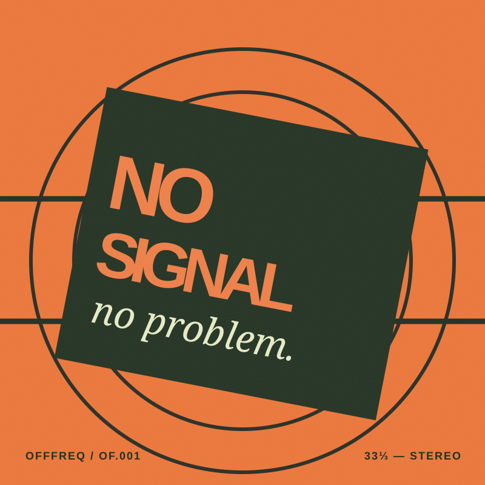
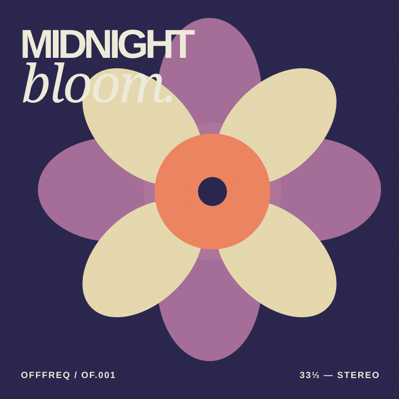
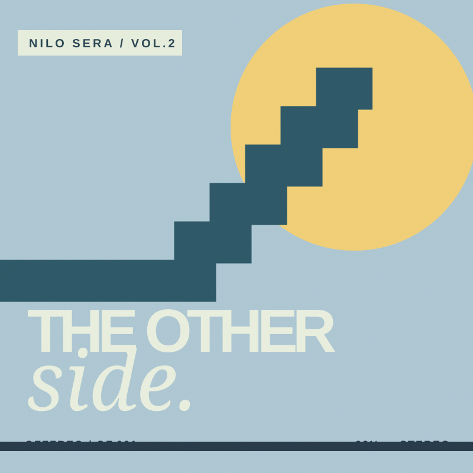

✳ WELCOME TO THE OTHER FREQUENCYISSUE 001 YOUR NEW LISTENING ROOM
NOT ANOTHER PLAYLIST MACHINE.
For ears
that wander.
AN INDEPENDENT WAY TO PRESS PLAY. ↘
OFFFREQ SELECTSVOL. 001 — 2026
✳
STAY CURIOUS · KEEP LISTENING
ISSUE NO. 001SOUND
WITHOUT
THE NOISE.
↗FRESH FINDS✳NO ALGORITHMS. JUST GOOD EARS.✳A LITTLE OFF THE MAINSTREAM✳FRESH FINDS✳NO ALGORITHMS. JUST GOOD EARS.✳
01 / THE ROTATIONWorth a listen.
Twelve tracks we'd happily put our name next to.
FIND MORE SOUNDS →01 / Ambient
Almost Morning♡
Luma Vale02 / Electronic
Soft Edges♡
Yori Kaze03 / Jazz
Warm Static♡
Otis Nera04 / Indie
Park Bench Cinema♡
The Wax Stills02 / CURATED WITH INTENTION
Press play. Go somewhere.
ALL THE MIXES →OFFFREQ / MIX 01
OFFFREQ / MIX 02
03 / LITTLE DISCOVERIES
Still digging.
01
Open LateParsa Moon Electronic2:54♡02
Second NatureImani Grey Soul3:37♡03
No Signal, No ProblemRoomtone Alternative4:11♡04
Midnight BloomCala Noor Jazz3:48♡05
The Other SideNilo Sera Indie3:26♡✳A NOTE FROM THE EDITORSLess scrolling.
More feeling.
Everything here is picked on purpose. No endless feed. Just music with something to say.
GOOD MUSIC IS A GOOD PLACE TO START.OFFFREQ STUDIO® 2026